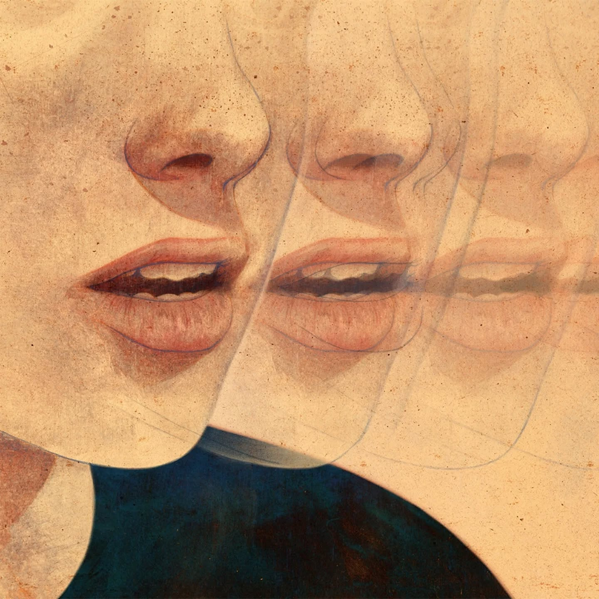
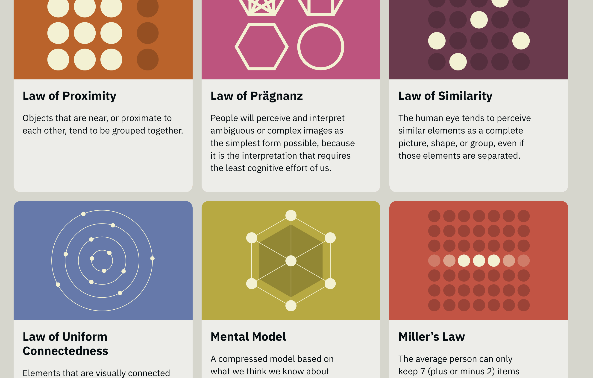
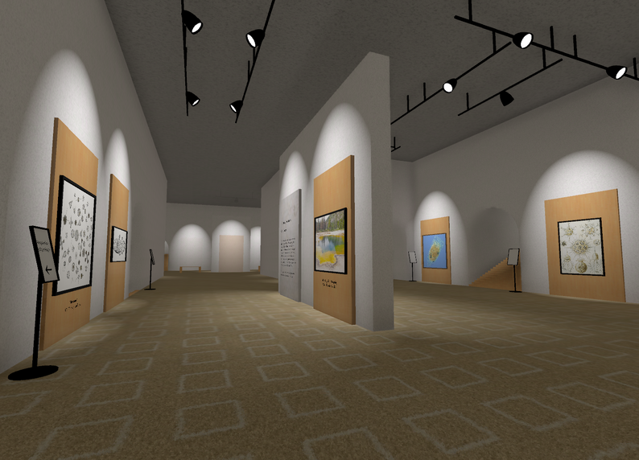
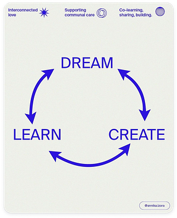

week 11 of 2025

Owen Gent creates surreal editorial illustrations in a cool painterly style.
So I’ve been busy as hell for the last month with all sorts of extra projects and adventures. When that happens, it is so easy to let things slide. Thankfully, I have a little bit more time now to get caught up on the random bits and pieces that I’ve let fall to the floor. Turns out, I had a lot of stuff collected that was worth sharing.
graphic design stuff

Gorton is the hardest working font in Manhattan. It is a font used to physically engrave characters in objects made of plastic and metal. The ubiquitous font appears everywhere from name tags to signage to computer keyboards. I guarantee you have seen it a million times in a million places. The article is a compelling history with a ton of examples.
Viet GD is an archive of Vietnamese graphic design spanning over a hundred years of prints, posters, matchboxes, and other ephemera. Good [[art inspiration links|visual inspiration]].
Door Of Perception is an online portfolio/exploration/experience by a single creative artist. It is a surprisingly deep rabbit hole worth diving into.
Consumer Aesthetics Research Institute categorizes visual themes and styles from the last fifty years. Categories include such topics as Airbrush Surrealism of the 70s and 80s and Paperback Chic of the last decade. Fun to learn the names of different genres for future exploration. Also a fun wander down memory lane for those of us who have been around long enough to see fads come and go.
Letraset Graphic Materials Handbook is a classic full book on using Letraset tools, techniques, and fonts. Graphic design history right here.
web design stuff

Laws of UX is a visually stunning and fairly comprehensive collection of best practices for interface design. While there are some visual design principles covered, the bulk of the content is on mindsets and psychology of how users understand information. There’s an entire design course worth of content here.
HTML For People is a guide to building a website that explains the entire process in a way that feels like having a friend sitting next to you going over what to do and why you are doing it.
OKLCH color picker is an interactive tool to choose your digital color based on the vastly superior OKLCH color model. Yet another cool [[color and tools|color tool]].
games and interactive stuff

Museum Of All Things is a clever 3D front-end to Wikipedia that lets you explore as if you were wandering a strangely empty physical museum. Definitely a liminal backrooms sort of vibe that I find calming as I wander from space to space and topic to topic.
Fold N Fly is a collection of paper airplane patterns filterable by style, type, difficulty, etc. I’ve tested a few and have had good luck. Then again, I grew up enjoying the thrill of folding paper airplanes so this was like candy to me.
3D maze is exactly what it sounds like. You get a fun colorful maze that feels sort of like the modular climbing structures you used to see on playgrounds back in the day, except you don’t have to worry about gravity when falling out of it.
Flip A Real Coin is an actual physical tube with an honest-to-goodness penny hooked up to a little motor and webcam. You can click to have the machine flip a real coin for you from the comfort of your own device.
synthwave for life
I’ve found that Synthwave music makes for great background audio soundscapes while working. Good beats and rhythms with an uplifting energetic vibe that help me be more productive.
Synthwave Radio is a streaming YouTube channel connected to the popular LoFi Girl channel.
Nightride FM has a cool website with several different channels and gritty visual style.
Synthwave.Live is a collection of weekly synthwave mixes that last anywhere from half an hour to an hour. Perfect snippets of sound for quick bursts of work.
I also love the Synthwave visual aesthetic dripping with classic 80s neon glows. James White aka SignalNoise captures the feel perfectly.
Modern logos reimagined with an 80s aesthetic combines both graphic design cleverness and nostalgic joy. It isn’t synthwave, exactly, but does blend the 80s vibe with graphic design inspiration.
miscellaneous creative process stuff
A few quotes and concepts related to creative process.

The world is a museum of other people’s passion projects.
— John Collison
